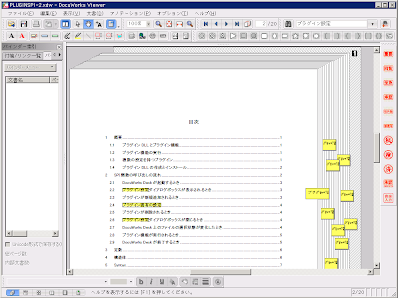
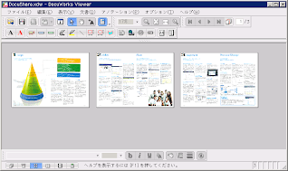
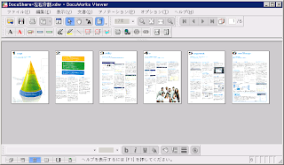
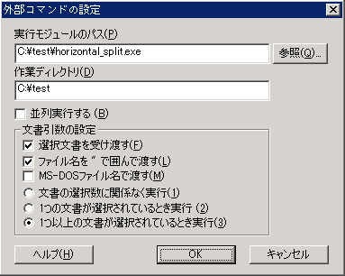
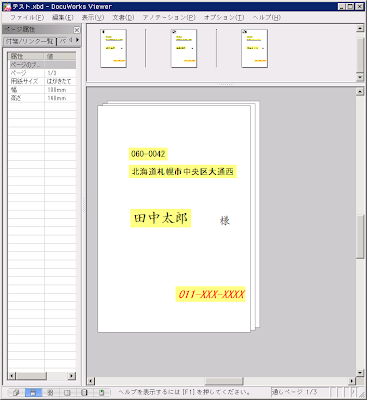

サンプルプログラム¶
Python DocuWorks Library を利用したプログラムの例をいくつか挙げます。
wc (word count)¶
Unix で一般的な wc コマンドに似た処理を行います。
引数で指定されたファイルに含まれるテキスト (アプリケーションテキスト
および OCR テキスト) の文字数、ページ数、文書数を出力します。
各ページの間には区切り文字 (0x0c) が 1 文字あり、それも文字数に入っています。
wc というわりには単語数は数えてくれませんが……。
"""wc.py"""
import sys
from xdwlib import xdwopen
chars = pages = docs = 0
sys.argv.pop(0) # Dispose script name.
while sys.argv:
doc = xdwopen(sys.argv[0])
chars += len(doc.content_text())
pages += doc.pages
docs += doc.documents or 1
doc.close()
sys.argv.pop(0)
print chars, pages, docs
OCR 処理¶
全部のページを DocuWorks イメージページへ変換して、OCR 処理を行います。
"""ocr.py"""
import sys
from xdwlib import xdwopen
doc = xdwopen(sys.argv[1])
for i in range(doc.pages):
if doc.page(i).type != "IMAGE":
doc.rasterize(i, color="mono")
doc.page(i).ocr()
doc.save()
doc.close()
検索してマーク¶
ドキュメントを開き、指定の正規表現にしたがってテキストを検索します。 みつかった場所に半透明の黄色い矩形を重ねるとともに、 検索パターンを記載した付箋をページあたり 1 枚貼ります。 DocuWorks 付属の「検索してマーク」プラグインとは違い、対象ドキュメントに 直接マーキングをします。
"""mark.py"""
import sys
from xdwlib import xdwopen, Point
write = sys.stdout.write
regexp = sys.argv[1].decode(sys.stdin.encoding)
infile = sys.argv[2]
with xdwopen(infile, autosave=True) as doc:
for pg in doc:
rects = pg.re_regions(regexp)
tagged = False
for rect in rects:
mark = pg.add_rectangle(
rect=rect,
fill_color="yellow",
fill_style=True,
fill_transparent=True)
if tagged:
continue
tag = pg.add_stickey(
position=Point(pg.size.x - 10,
min(rect.top, pg.size.y - 10)),
size=Point(20, 10),
fill_color="yellow")
tag.add_text(
position=Point(0, 0),
text=regexp,
font_size=9,
margin=2,
back_color="NONE")
tagged = True
(実行例)
C:\test> python mark.py "プラグ\w*?設定" "C:\test\PLUGINSPI-2.xdw"
(実行結果)
{kind=link}
見開き書類をページごとに分割¶
たとえば、A4R 判左綴じの文書を見開き (A3 判) でスキャンして作った 1 ドキュメントを、ページごとに切り分けて A4R 判のドキュメントに変換します。 ページ数が倍のドキュメントができあがります。 アシストV株式会社様が公開されている「A3画像分割プラグイン for DocuWorks」と ほぼ同じ機能です (このプログラムでは元ドキュメントの大きさに関わらず 分割できます)。ただし、アノテーションは引き継がれません。
- 1
ページイメージの内部格納形式が PDF だと、
pg.export_image(direct=True)の部分がうまく動作しません。 元の画像が BMP, TIFF, JPEG のいずれかであるものを対象にしてください。
# coding: mbcs
"""horizontal_split.py"""
import sys
import os
from xdwlib import xdwopen
from xdwlib.page import PageCollection
from xdwlib.struct import Point
infile = sys.argv[1]
if os.path.splitext(infile)[1].lower() != ".xdw":
raise ValueError("file must be *.xdw")
newfile = infile[:-4] + u"-左右分割.xdw"
with xdwopen(infile) as doc:
pages = doc.pages
for pg in doc[:pages]:
degree = pg.degree
# A3見開き→A4×2ページのようにするため、取り込み時のページ幅は半分にします。
# スキャン時の画像の向きを考慮して引数を設定していきます。
# 対象となる DocuWorks 文書は、DocuWorks Viewer で正しく閲覧できる向きに
# あらかじめ回転を済ませておいてください。
if degree == 0:
size = Point(pg.size.x / 2, pg.size.y)
align = (("left", "center"), ("right", "center"))
elif degree == 90:
size = Point(pg.size.y, pg.size.x / 2)
align = (("center", "bottom"), ("center", "top"))
elif degree == 180:
size = Point(pg.size.x / 2, pg.size.y)
align = (("right", "center"), ("left", "center"))
elif degree == 270:
size = Point(pg.size.y, pg.size.x / 2)
align = (("center", "top"), ("center", "bottom"))
# いったんページをファイルへ出力します。
temp = pg.export_image(direct=True)
# 左半分・右半分の順で取り込み、末尾に追加します。
doc.append_image(temp, fitimage="userdef", size=size.int(), compress="lossless", align=align[0])
doc[-1].rotate(degree=degree)
doc.append_image(temp, fitimage="userdef", size=size.int(), compress="lossless", align=align[1])
doc[-1].rotate(degree=degree)
# 一時ファイルを消去します。
os.remove(temp)
# 分割前のページは不要になるので削除します。
del doc[:pages]
# 分割前のファイルは残し、新たなファイルへ保存します。
PageCollection(doc).export(newfile, flat=True)
(実行例)
C:\test> python horizontal_split.py "C:\test\DocuShare.xdw"
(実行前)
{kind=link}
(実行後)
{kind=link}
応用編として、このプログラムを py2exe で実行形式にした上で、DocuWorks の プラグインの設定で「外部コマンドの起動」を追加すると、クリックひとつで イメージドキュメントのページ分割ができるようになります。
(設定例)
{kind=link}
このページの下部に、実際に動作する DocuWorks プラグインを置いておきます。 zip ファイルを展開すると horizontal_split.exe が取り出せるので、それを 「外部コマンドの起動」で実行モジュールのパスとして指定してください。 その他の設定は上図に準じます。
差し込み処理¶
DocuWorks 文書に対してデータの差し込みを行います。
差し込み用 DocuWorks 文書の例
差し込むデータは、CSV ファイルを DocuWorks 文書にオリジナルデータとして 添付して与えます。複数の CSV ファイルを添付した場合は、最初に見つけたものを 使用します。CSV ファイルは、Windows で標準的な Windows-31J (CP932) または BOM 付き UTF-8 で作成してください。先頭行には、項目名を置きます。たとえば
郵便番号,住所,氏名,電話番号
060-0042,北海道札幌市中央区大通西,田中太郎,011-XXX-XXXX
989-3211,宮城県仙台市青葉区赤坂,佐藤優子,022-2XX-XXXX
100-0001,東京都千代田区千代田,富士さくら,03-3XXX-XXXX
差し込まれる方の DocuWorks 文書では、テキストアノテーションで 差し込み位置と差し込み項目を指定します。差込項目は、テキストアノテーションの テキスト自体に「{項目名}」を記入することで行います。 たとえば次の図のようにします (わかりやすいように、差し込み指定の テキストアノテーションは背景を薄黄色にしています)。
{kind=link}
このとき、
テキストが完全に「{項目名}」の形式になっていないと、その部分へは 差し込みを行いません。改行やスペースも入らないようにしてください。
テキストアノテーションのテキスト以外の属性はそのまま利用されます。
同じ項目名のテキストアノテーションが複数あってもかまいません。
DocuWorks 文書は複数ページにわたっていてもかまいません。
以上の準備を終えた DocuWorks 文書を次のプログラムで処理すると、 DocuWorks 文書の各ページに CSV ファイルの 1 行を差し込んだ結果である DocuWorks 文書をデータの件数 (先頭行を除くデータ行数) 分だけ作成し、 全体を 1 個の DocuWorks バインダーにまとめて、 元の DocuWorks 文書と同じディレクトリ内に保存します。
たとえば、元の DocuWorks 文書が 5 ページ、CSV ファイルの先頭行を除くデータが 100 行ある場合、 5 ページの文書 を 100 個含む、全体で 500 ページの DocuWorks バインダーが生成されます。
# coding:cp932
"""merger.py"""
import sys
import os
import csv
from xdwlib import xdwopen, create_binder
from xdwlib.xdwtemp import XDWTemp
DEFAULT_ENCODING = "cp932"
def merge(path):
with XDWTemp(suffix=".csv") as csvfile:
with xdwopen(path) as doc:
for att in doc.attachments:
_, ext = os.path.splitext(att.name.lower())
if ext == ".csv":
att.save(csvfile.path)
break
else:
return
name, _ = os.path.splitext(path)
with xdwopen(create_binder(name + ".xbd"), autosave=True) as bdoc:
with XDWTemp() as out:
with open(csvfile.path) as infile:
enc = DEFAULT_ENCODING
if infile.read(3) == "\xef\xbb\xbf": # BOM in UTF-8
enc = "utf-8"
else:
infile.seek(0)
reader = csv.DictReader(infile)
reader.fieldnames = [fld.decode(enc) for fld in reader.fieldnames]
for row in reader:
row = dict((k, v.decode(enc)) for (k, v) in row.items())
with xdwopen(path) as doc:
for pg in doc:
for ann in pg:
if (ann.type == "TEXT" and
ann.text.startswith("{") and
ann.text.endswith("}")):
ann.text = row.get(ann.text[1:-1], "")
doc[:].export(out.path, flat=True)
# Keep the original file unchanged.
bdoc.append(out.path)
os.remove(out.path)
def main():
if len(sys.argv) < 2:
quit()
for arg in sys.argv[1:]:
path = arg.decode(sys.stdin.encoding).lower()
_, ext = os.path.splitext(path.lower())
if ext == ".xdw":
merge(path)
if __name__ == "__main__":
main()
(実行結果の例)
{kind=link}